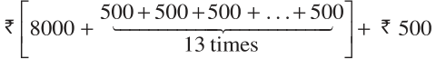

th Term of an AP
job and got selected. She has been offered the job with a starting monthly salary of ` 8000, with an annual increment of ` 500. What would be her monthly salary for the fifth year? To answer this, let us first see what her monthly salary for the second year would be. It would be ` \((8000 + 500) =\) ` 8500. In the same way, we can find the monthly salary for the 3rd, 4th and 5th year by adding ` 500 to the salary of the previous year. So, the salary for the 3rd year = ` \((8500 + 500)\)
= ` \((8000 + 500 + 500) =\) ` \((8000 + 2 \times 500)\)
= ` \([8000 + (3 - 1) \times 500]\) (for the 3rd year)
= ` 9000
Salary for the 4th year = ` \((9000 + 500)\)
= ` \((8000 + 500 + 500 + 500) =\) ` \((8000 + 3 \times 500)\)
= ` \([8000 + (4 - 1) \times 500]\) (for the 4th year)
= ` 9500
Salary for the 5th year = ` \((9500 + 500)\)
= ` \((8000+500+500+500 + 500) =\) ` \((8000 + 4 \times 500)\)
= ` \([8000 + (5 - 1) \times 500]\) (for the 5th year)
= ` 10000
Observe that we are getting a list of numbers
8000, 8500, 9000, 9500, 10000, . . .
These numbers are in AP. (Why?)
Now, looking at the pattern formed above, can you find her monthly salary for the 6th year? The 15th year? And, assuming that she will still be working in the job, what about the monthly salary for the 25th year? You would calculate this by adding ` 500 each time to the salary of the previous year to give the answer. Can we make this process shorter? Let us see. You may have already got some idea from the way we have obtained the salaries above. Salary for the 15th year
= Salary for the 14th year + ` 500

= ` \([8000 + 14 \times 500]\)
= ` \([8000 + (15 - 1) \times 500] =\) ` 15000
i.e., First salary \(+ (15 - 1) \times\) Annual increment.
In the same way, her monthly salary for the 25th year would be
` \([8000 + (25 - 1) \times 500] =\) ` 20000
= First salary \(+ (25 - 1) \times\) Annual increment
This example would have given you some idea about how to write the 15th term, or the 25th term, and more generally, the nth term of the AP. Let a_{1}, a_{2}, a_{3}, . . . be an AP whose first term a_{1} is a and the common difference is d.
Then,
the second term \(a_{2} = a + d = a + (2 - 1) d\) the third term \(a_{3} = a_{2} + d =\) (a + d) \(+ d = a + 2d = a + (3 - 1) d\) the fourth term \(a_{4} = a_{3} + d =\) (a \(+ 2d) + d = a + 3d = a + (4 - 1) d\)
. . . . . . . .
. . . . . . . .
Looking at the pattern, we can say that the nth term \(a_{n} = a +\) (n \(- 1) d\). So, the nth term a_{n} of the AP with first term a and common difference d is
given by \(a_{n} = a +\) (n \(- 1) d\).
a_{n} is also called the general term of the AP. If there are m terms in the AP, then a_{m} represents the last term which is sometimes also denoted by l. Let us consider some examples.
Example 3 : Find the 10th term of the AP : 2, 7, 12, . . .
Solution : Here, \(a = 2\), \(d = 7 - 2 = 5\) and \(n = 10\).
We have \(a_{n} = a +\) (n \(- 1) d\) So, \(a_{10} = 2 + (10 - 1) \times 5 = 2 + 45 = 47\)
Therefore, the 10th term of the given AP is 47.
Example 4 : Which term of the AP : 21, 18, 15, . . . is \(- 81\)? Also, is any term 0? Give reason for your answer.
Solution : Here, \(a = 21\), \(d = 18 - 21 = - 3\) and \(a_{n} = - 81\), and we have to find n.
As \(a_{n} = a +\) ( \(n - 1) d\), we have \(- 81 = 21 +\) (n \(- 1)( - 3)\)
\(- 81 = 24 - 3n\)
\(- 105 = - 3n\)
So, \(n = 35\)
Therefore, the 35th term of the given AP is \(- 81\).
Next, we want to know if there is any n for which \(a_{n} = 0\). If such an n is there, then
\(21 +\) (n \(- 1)\) ( \(- 3) = 0\),
i.e., \(3(n - 1) = 21\)
i.e., \(n = 8\)
So, the eighth term is 0.
Example 5 : Determine the AP whose 3rd term is 5 and the 7th term is 9. Solution : We have
\(a_{3} = a + (3 - 1) d = a + 2d = 5 (1)\)
and \(a_{7} = a + (7 - 1) d = a + 6d = 9 (2)\)
Solving the pair of linear equations (1) and (2), we get
\(a = 3\), \(d = 1\)
Hence, the required AP is 3, 4, 5, 6, 7, . . .
Example 6 : Check whether 301 is a term of the list of numbers 5, 11, 17, 23, . . . Solution : We have :
\(a_{2} - a_{1} = 11 - 5 = 6\), \(a_{3} - a_{2} = 17 - 11 = 6\), \(a_{4} - a_{3} = 23 - 17 = 6\)
As \(a_{k} + 1 - a_{k}\) is the same for \(k = 1\), 2, 3, etc., the given list of numbers is an AP. Now, \(a = 5\) and \(d = 6\).
Let 301 be a term, say, the nth term of this AP.
We know that
\(a_{n} = a +\) (n \(- 1) d\)
So, \(301 = 5 +\) (n \(- 1) \times 6\)
i.e., \(301 = 6n - 1\)
So, \(n = \frac{302}{6} = \frac{151}{3}\)
But n should be a positive integer (Why?). So, 301 is not a term of the given list of numbers.
Example 7 : How many two-digit numbers are divisible by 3? Solution : The list of two-digit numbers divisible by 3 is :
12, 15, 18, . . . , 99
Is this an AP? Yes it is. Here, \(a = 12\), \(d = 3\), \(a_{n} = 99\).
As \(a_{n} = a +\) (n \(- 1) d\), we have \(99 = 12 +\) (n \(- 1) \times 3\)
i.e., \(87 =\) (n \(- 1) \times 3\)
i.e., \(n - 1 = \frac{87}{3} = 29\)
i.e., \(n = 29 + 1 = 30\)
So, there are 30 two-digit numbers divisible by 3.
Example 8 : Find the 11th term from the last term (towards the first term) of the AP : 10, 7, 4, . . ., \(- 62\).
Solution : Here, \(a = 10\), \(d = 7 - 10 = - 3\), \(l = - 62\),
where \(l = a +\) (n \(- 1) d\)
To find the 11th term from the last term, we will find the total number of terms in the AP.
So, \(- 62 = 10 +\) (n \(- 1)( - 3)\)
i.e., \(- 72 =\) (n \(- 1)( - 3)\)
i.e., \(n - 1 = 24\)
or \(n = 25\)
So, there are 25 terms in the given AP. The 11th term from the last term will be the 15th term. (Note that it will not be the 14th term. Why?)
So, \(a_{15} = 10 + (15 - 1)( - 3) = 10 - 42 = - 32\)
i.e., the 11th term from the last term is \(- 32\).
Alternative Solution :
If we write the given AP in the reverse order, then \(a = - 62\) and \(d = 3\) (Why?) So, the question now becomes finding the 11th term with these a and d.
So, \(a_{11} = - 62 + (11 - 1) \times 3 = - 62 + 30 = - 32\)
So, the 11th term, which is now the required term, is \(- 32\).
Example 9 : A sum of ` 1000 is invested at 8% simple interest per year. Calculate the interest at the end of each year. Do these interests form an AP? If so, find the interest at the end of 30 years making use of this fact.
Solution : We know that the formula to calculate simple interest is given by
Simple Interest \(= \frac{P \times R \times T}{100}\)
So, the interest at the end of the 1st year = ` \(\frac{1000 \times 8 \times 1}{100} =\) ` 80 The interest at the end of the 2nd year = ` \(\frac{1000 \times 8 \times 2}{100} =\) ` 160 The interest at the end of the 3rd year = ` \(\frac{1000 \times 8 \times 3}{100} =\) ` 240 Similarly, we can obtain the interest at the end of the 4th year, 5th year, and so on. So, the interest (in `) at the end of the 1st, 2nd, 3rd, . . . years, respectively are
80, 160, 240, . . .
It is an AP as the difference between the consecutive terms in the list is 80, i.e.,
\(d = 80\). Also, \(a = 80\).
So, to find the interest at the end of 30 years, we shall find a_{30}.
Now, \(a_{30} = a + (30 - 1) d = 80 + 29 \times 80 = 2400\)
So, the interest at the end of 30 years will be ` 2400.
Example 10 : In a flower bed, there are 23 rose plants in the first row, 21 in the second, 19 in the third, and so on. There are 5 rose plants in the last row. How many rows are there in the flower bed?
Solution : The number of rose plants in the 1st, 2nd, 3rd, . . ., rows are :
23, 21, 19, . . ., 5
It forms an AP (Why?). Let the number of rows in the flower bed be n.
Then \(a = 23\), \(d = 21 - 23 = - 2\), \(a_{n} = 5\) As, \(a_{n} = a +\) (n \(- 1) d\) We have, \(5 = 23 +\) (n \(- 1)( - 2)\)
i.e., \(- 18 =\) (n \(- 1)( - 2)\)
i.e., \(n = 10\)